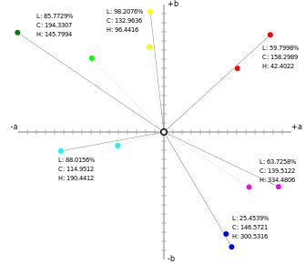
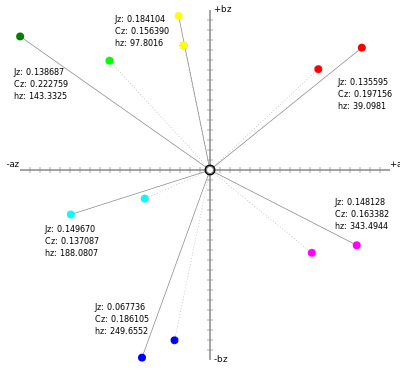

Introduction
Traditional color management,
with a focus on the reproduction of printed imagery,
has concerned itself with a restricted dynamic range;
typically less than 90:1, it is
formed by the deepest multi-ink black, on the one hand,
and paper white
seen under a not especially bright illuminant (??? cd/m2)
(get viewing cabinet values)
on the other.
Developments in display technology
increased this, but it was still bounded by display flare (at the dark end)
and modest peak luminances of 200 cd/m² or so at the high end,
giving a linear dynamic range of 1000:1 or so.
Real-world scenes (from Fairchild, simultaneous dynamic range)
specular hilights, deep shadows
HDR survey.
Experiments to extend L to a modest level of 400
(4x media white)
(hdr-CIELAB, hdr-IPT).
Meanwhile the TV and movie industry,
and the related field of 3D computer graphics,
has advanced and is generating,
manipulating
and distributing to consumers,
HDR content with dynamic ranges of 4000:1
or higher.
HDR luminance levels
Current HDR video broadcasts conform to [Rec.2100]
which supports two transfer functions:
one with relative luminance and suitable for variable viewing conditions
(Hybrid Log Gamma, HLG)
and the other with absolute luminance and suitable for fixed, dark viewing conditions
(Perceptual Quantizer, PQ);
the latter requires re-rendering for other viewing environments.
Rec.2100 supports (peak, small-area) luminances up to 12x media white (HLG)
or 71.4x media white (PQ).
Dark colors significantly below
those suported by Standard Dynamic Range (SDR)
once viewing flare is taken into account,
are also supported.
The highest conformance level of the VESA
Besides video, there is interest in distributing HDR still-image content,
either stills from video content,
or HDR graphic arts content.
Computer graphics content, OpenEXR.
ACES archival imagery.
Neflix AVIF paper
The ICC Profile Connection Space
ICC (4.3 and Max) currently allows XYZ and Lab as Profile Connection Space.
XYZ is unbounded, and used for HDR by ACES (see below).
Lab is bounded to L=100 at media white.
??? has shown that L can be extended to 400
??? has shown that L is a poor predictor of Lightness beyond 400
Arbitrarily placing the peak intensity white at L=100
distorts the Lightness curve and would not (??? why)
be a good Lightnes predictor.
Modifications to CIE Lab, such as [HDR-Lab] and [???]
are known, but would constitute an additional PCS.
The idea of adding an additional PCS is not new;
Tastl et al have explored using CIECAM02 as an ICC PCS [ICC CIECAM02].
Safdar et al [] have proposed Jzazbz, and HDR-capable uniform colorspace [Safdar-PUCS].
Jzazbz uses (a modified) PQ transfer function,
claims to correct the CIE Lab hue non-linearity,
is computationally less complex than CIECAM02 or CIECAM16,
and has an associated deltaE metric
which is (compared to deltaE 2000) computationally simple
and could be used for gamut mapping operations.
This paper therefore examines Jzazbz as a potential HDR ICC PCS.
Jzazbz
(describe)
(goals from paper)
The input to Jzazbz is absolute CIE XYZ, with a D65 whitepoint.
?? scene referred or output referred?
Since ICC uses CIE XYZ as a PCS,
and since ICCMax allows non-D50 whitepoints,
it seems feasible that a future version of the ICC specification
could add Jzazbz as an additional PCS for processing of HDR data.
The present author
implemented
Jzazbz and JzCzhz as part of a
JavaScript color library.
The implementation was checked against published Matlab code,
but is as yet unreleased as it needs more testing to be certain of correctness.
Transfer curve
The Jz component, termed Brightness,
is the perceptually uniform correlate of Luminance
in the Jzazbz model.
The transfer curve is strongly influenced by,
but not identical to,
the Dolby PQ curve used in Rec.2100;
like PQ, the luminance range is absolute and ranges from
0 to 10,000 cd/m².
The authors of Jzazbz
do not specifically address
where in this range
the media white should be placed,
although this is a critical item both for viewer comfort
and for the integration of SDR and HDR content in a single program.
Dolby conducted a histogram analysis of
HDR and SDR graded indoor scenes from cinematic content for home distribution.
Their Reference Level Guidelines for PQ [Dolby-PQ-levels]
give the encoded PQ values of
0.34 for an 18% gray card (17 cd/m²)
and go on to deduce the corresponding level of 0.54
for a media 'diffuse white' (100% reflectance) illuminated at 140 cd/m².
Their analysis found outdoor scenes to be 1.7 stops higher in exposure,
placing an 18% grey card at 57 cd/m² and a PQ value of 0.45,
with diffuse white at 425 cd/m² and a PQ value of 0.66.
The implementation by the present author therefore places the media whitepoint
for all SDR RGB colorspaces at PQ of 0.54, corresponding to 140 cd/m².
Capabilities, peak luminance, media white (Dolby).
Fixed viewing condition assumption.
Use for chroma plane as well as lightness axis.
Small numbers due to limited range
Chroma and Hue
Like the equations for deltaE2000,
Jzazbz introduces a correction term for
the deep blue to purple non-linearity of Lab and CIECAM02

Rec.2020 primaries and secondaries, plotted on the CIE CH plane.
For comparison, the sRGB primaries and secondaries are shown by the dashed lines.

Rec.2020 primaries and secondaries, plotted on the CIE CH plane.
For comparison, the sRGB primaries and secondaries are shown by the dashed lines.
Notice the shift in hue angle of the blue primaries relative to cyan and magenta,
the altered hue angle differences between sRGB and Rec.2020 values,
and the very small numbers:
for example, Rec.2020 yellow
has a CIE LCH Chroma of 132 but a JzCzhz Chroma of 0.156.
(summarize equation)
DeltaE
Rousselot et. al. [Quality Assesment HDR] examined HDR image quality metrics
using ICtCp, Jzazbz, and HDR-Lab.
12 SDR metrics were extended to HDR,
and two new HDR metrics were proposed.
Because many of the limitations of CIE Lab are corrected in the computation of Jzazbz,
then unlike the relatively complicated deltaE2000 metric,
the deltaE metric uses a simple linear root sum of squares in JzCzhz:
ΔE = √(ΔJz² + ΔCz² + Δhz²)
where, as with CIE LCH, Δhz is the length of the chord:
Δhz = 2 × √(Cz1 × Cz2) × sin(Δh), Δh in radians
This metric was
implemented
and
tested
against 76, CMC(2,1) and deltaE2000.
It is immediately apparent that the metric has a very different range.
(table with white-to-black, Sharma "large delta E", and small deltaE comparisons.)
While not necessarily an issue for automated tasks such as gamut mapping,
the very small values for this distance metric might prove a barrier to
acceptability or perceptibility use or client-vendor communication.
Input data
Not very many HDR samples, in particular no non-neutral samples above media white.
??? HDR gamut mapping study used ??? colorspace
Gamut mapping
Gamut compression from an SDR, WCG display
to a SCG display
has been investigated by Xu et al
[CGM-Vividness], [Gamut Compression]
who compared CIE Lab, CAM02-UCS and Jzazbz.
Six global and two local (spatial) GMAs were tested.
Their algorithms included Vividness Preserving
(distance from the blackpoint)
and Depth Preserving (distance from media white);
the latter did not perform well.
Their conclusions included the statement that
"Jzazbz is a promising UCS for gamut mapping".
However, only the WCG aspect of Jzazbz was investigated, not the HDR aspect.
To simulate a constant-lightness, hue preserving GMA,
the present author implemented Jzazbz, JzCzhz, and the Jz distance metric;
then plotted the progressive Chroma reduction
of two blues (sRGB primary blue and Rec.2020 primary blue)
in two UCS: CIE LCH and Jzazbz.
Blue was chosen to investigate the hue linearity,
which is known to be problematic for CIE Lab.
 Above: sRGB blue, with progressive reduction of
CIE LCH Chroma to the neutral axis.
Above: sRGB blue, with progressive reduction of
CIE LCH Chroma to the neutral axis.
Below, linear-light sRGB primary intensities.
 Above: sRGB blue, with progressive reduction of
JzCzhz Chroma to the neutral axis.
Above: sRGB blue, with progressive reduction of
JzCzhz Chroma to the neutral axis.
Below, linear-light sRGB primary intensities.
For the LCH chroma reduction,
a shift towards purple is easily seen
and the RGB levels clearly indicate that
the red component is rising faster than the green.
For the JzCzhz chroma reduction,
the objectionable purple shift
is replaced by a worrying cyan shift,
and the green component is rising faster than the red.
In addition, the three components do not fully converge to the neutral axis.
Having examined a SCG mapping, as a WCG colorspace Rec.2020 blue was tested.
The color ramps are converted to sRGB for display; salmon indicates out-of-gamut colors.
 Above: Rec.2020 blue, with progressive reduction of
CIE LCH Chroma to the neutral axis.
Above: Rec.2020 blue, with progressive reduction of
CIE LCH Chroma to the neutral axis.
Below, linear-light Rec.2020 primary intensities.
 Above: Rec.2020 blue, with progressive reduction of
JzCzhz Chroma to the neutral axis.
Above: Rec.2020 blue, with progressive reduction of
JzCzhz Chroma to the neutral axis.
Below, linear-light Rec.2020 primary intensities.
The same tendencies
(an excess of red in LCH,
and of green in JzCzhz)
were noted,
although only a portion of the generated color ramp
could be visualized due to display gamut limitations.
It is hypothesized that the shift from blue to purple,
which crosses a color name boundary,
is visualy more noticeable than
the shift from deep blue to cyan blue,
which does not.
Further Work
It is possible that a UCS with the HLG transfer curve might
be more widely applicable to a range of viewing environments
and allocate more of the code space to commonly occurring colors.
The hue linearity needs to be further investigated.
Performance with non-neutral, high chroma colors is inadequately explored.
The values for JzCzhz brightness and chroma,
and the values for deltaE,
are too small for easy comprehension
or comparison with other systems.
Beyond that, no conclusions are presented at this stage.
Much further work remains to be done
to even understand the goals of HDR-capable ICC manipulation of color.
In addition to merely progressing from colorimetry to color appearance models:
spatial effects and image appearance models,
tone mapping/color re-rendering,
user expectations and
the range of viewing environments
are increasingly important for satisfactory rendering of still,
let alone moving,
HDR content.